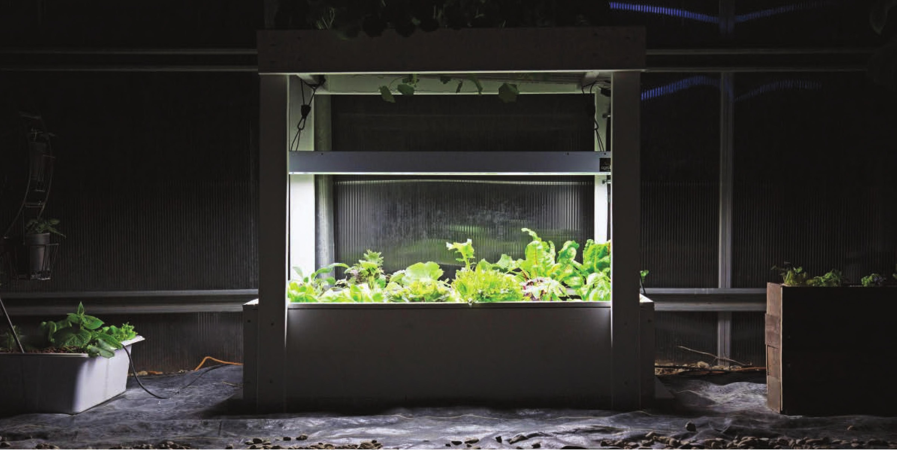

Troubleshooting Roots are growing poorly or are brown and mushy • Water may be too warm. • The pH may be out of target range. Test and adjust based on target pH for your crop (see the appendix for target pHs). • May have root diseases present and susceptible crops. Flush and completely sanitize reservoir, raft, and net pots before replanting garden. Plants are growing slowly • Check EC to make sure it is in target range. • Garden may not be receiving enough light. • Water may be too cold. Temperatures less than 65°F can slow growth on some crops. Try painting the reservoir black, adding a water heater, and/or selecting different crops that are more tolerant of cold conditions. Water level is dropping fast • May have a leak in the liner. Check for water around the reservoir. If the reservoir is leaking, remove existing liner, check for any objects that may have caused a puncture in the liner, and insert a new liner. If leaks persist, try adding foam boards on side walls and the bottom of the reservoir before adding new liner. HYDROPONIC GROWING SYSTEMS 59
